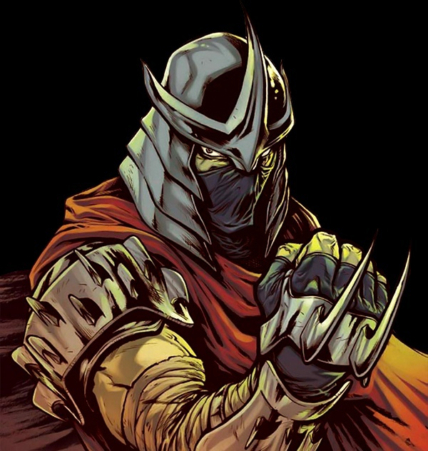

"You'll be crushed under the Foot!"
Shredder

Biography
300 years ago, consumed by the darkness of the demonic dragon - they, a young warrior, Oroku Saki usurped power over the Foot Clan from his father, Oroku Magi. As leader, Saki led the clan to triumph, glory, and victory until he was killed in battle. In the present day, his descendant, Oroku Karai, revived him in order for Saki to take his rightful place as leader of the Foot Clan, where he again faced the reincarnation of his former rival, Hamato Yoshi, now called Splinter, and his four mutant sons, the ninja turtles.
Strength
- Meta-human physical strength
- Can overpower mutant turtles and elite fighters
- High destructive melee force
Speed & Reflexes
- Extremely fast ninja combat reactions
- Can dodge bullets and energy attacks
- Elite-level acrobatic mobility
Endurance
- Meta-human durability
- Survived explosions, burns, and heavy trauma
- Can continue fighting against multiple opponents simultaneously
Skills & Martial Arts
- Master of ninjutsu
- Elite close-combat weapon specialist
- Expert tactician and assassin leader
- Can defeat multiple elite ninja simultaneously
Experience
Centuries of leadership over the Foot Clan, multiple reincarnations, and constant warfare against elite martial artists and mutant opponents.
Equipment
- Armored suit with blade attachments
- Kabuto helmet
- Teko-kagi claw weapons
- Shurikens
- Katana blades